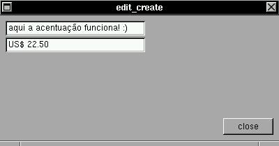

This widget enable you edit one line of text, with good support for non-US characters, navegation keys (like arrows) and verification functions.SYNTAXThe edition keys are:
keypad_enter 65421 jump to next editboxIf you jump to last or next editbox, a broadcast will be generated and the formatting function will be called. In addition, many international compose keys are available without any special configuration of X11:
key_escape 65307 clear buffer
key_delete 65535 delete right char
key_backspace 65288 delete left char
key_arrow_left 65361 jump to left char
key_arrow_right 65363 jump to right char
key_arrow_up 65362 jump to last editbox
key_arrow_down 65364 jump to next editbox
key_tab 65289 jump to next editbox*
key_return 65293 jump to next editbox
key_home 65360 jump to first char
key_end 65367 jump to last char* can be reversed w/ shift+tab!
key_agrave 224The support for text edition in XSTEP was not enhanced since version 2.0 and will be fully revised in future versions.
key_aacute 225
key_acircunflex 226
key_atilde 227
key_adiaeresis 228
key_egrave 232
key_eacute 233
key_ecircunflex 234
key_ediaeresis 235
key_igrave 236
key_iacute 237
key_icircunflex 238
key_idiaeresis 239
key_ograve 242
key_oacute 243
key_ocircunflex 244
key_otilde 245
key_odiaeresis 246
key_ugrave 249
key_uacute 250
key_ucircunflex 251
key_udiaeresis 252
key_cedila 231
key_ntilde 241
key_yacute 253
key_ydiaeresis 255
struct xtree *edit_create(x,y,w,h,buffer,size,f);EXAMPLEint x,y,w,h,size;
char *buffer;
void (f*)(struct xtree *));Create a editable textbox in position (x,y) and size (w,h). The 'buffer' can be edited. Many keys are accepted for edition and a optional callback for a formatting or verification function is available.
This is just a window with two edit widgets :)#include <xstep.h> char buffer1[64],buffer2[64]; void function(struct xtree *t) { if(atof(t->b)) sprintf(t->b,"US$ %.02f",atof(t->b)); broadcast++; } void xmain(int n,char *p[]) { window_create(0,0,400,180,"edit_create"); edit_create(8,8,200,21,buffer1,64,function); edit_create(8,8+24,200,21,buffer2,64,function); button_create(-8,-8,72,24,"close",window_close); }You can test all cursor keys and tab/shitf+tab keys to navigate in these two boxes. If you type enter, up arrow, down arrow, tab or shift+tab, a verification function will be called. This verification function will make a test: if you type a number, this number will be formated :)